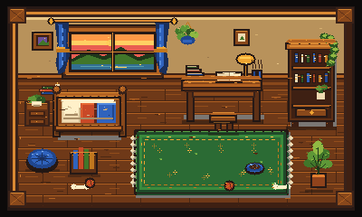

Canvas
Godot — adoption-ready candidate


Left: accepted/current Canvas spring-clear capture used in the Godot POC comparison. Right: adoption-ready Godot Reference-v3 spring/day composition with the approved pre-regression Moss.

Godot review/actions/variants: open full Reference-v3 review.